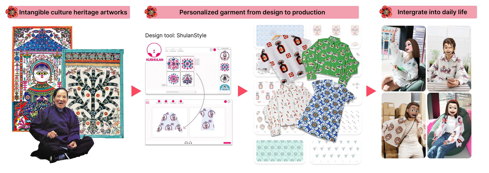

AI for Shaanxi Papercutting： Exploring Democratized Garment Personalization for Enlivening Intangible Cultural Heritage Artworks
Integrating intangible cultural heritage (ICH) elements into daily product design and developing tools for democratized personalization can enliven ICH. Garments, as essential items, provide a crucial context for this integration. However, research on using garments as a medium to enliven ICH has been limited, motivated us to pioneer democratized garment personalization to enliven ICH artworks. We developed ShulanStyle, a garment customization tool based on Ku Shulan's paper-cutting art from Xunyi County, Shaanxi Province, China, to explore an end-to-end process from design to production. An experiment with 14 participants revealed that garment personalization connects people with cultural heritage, offering a journey of exploration and learning, and a transition from awkwardness to ease in wearing. Personalized garments also become conversation starters for spreading ICH within social circles. We reflect on the challenges and propose a design model for enlivening ICH through democratized garment personalization, aiming to inspire HCI community on ICH revitalization.
This is the piepline of ShulanStyle AI system.
Shulan Style is an ongoing scientific research project. Currently, all the content has been revised. This is the version of the first draft, and it is expected to be submitted for publication.
Year：2024.